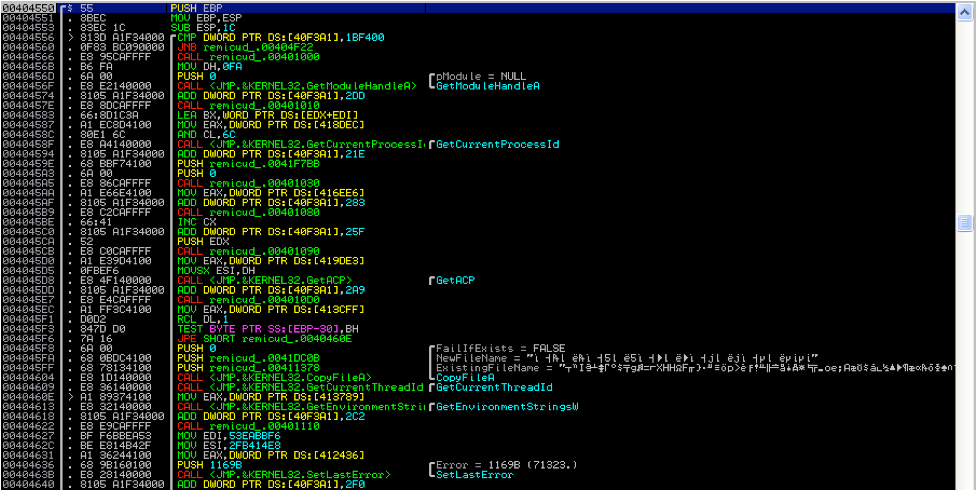

I'm interested in several things, such as
- Reverse engineering
- - parsing through a program's disassembly, understanding its data flow
- - interpreting the original program behavior through its assembly and debugging techniques
- - utilizing tools such as Cheat Engine and x64dbg
- The Japanese Language (日本語)
- - actively learning the language
- I have links and writeups about things that have interested me, on the right.
- Iterative software design
- - approaching software problems from multiple perspectives
- - synthesizing different solutions into a holistic one
- - using modular programming and good style to create elegant, readable, and maintainable code
- Simulation
- - procedural and simulated environments, creating beautiful works of art
- - making full use of modern computation techniques, such as threads and GPU utilization
- Hardware and Software synthesis
- - bringing together hardware and I/O with appropriate reactive software
- - designing safe, reliable hardware, and code written following iterative software design
I also write about things I find interesting, and host some links, which you can find here.
- About the
Japanese language:
resources and thoughts
-
Regarding
Reverse Engineering

-
All posts here.